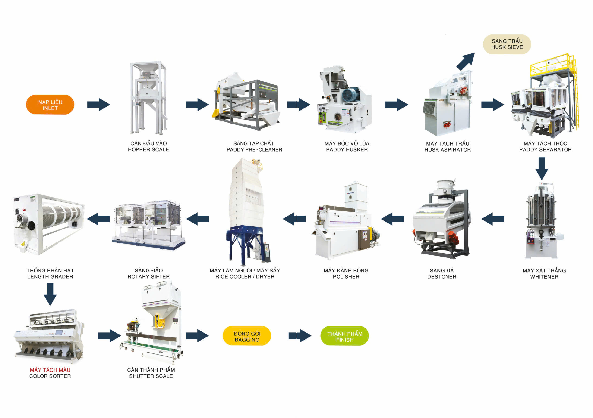

Lưu trình khép kín từ lúa nguyên liệu đến gạo thành phẩm
Dựa trên sơ đồ chuẩn và ảnh máy móc thực tế, quy trình được chia thành 3 giai đoạn để dễ theo dõi: làm sạch & bóc vỏ, xát trắng & hoàn thiện, phân loại & đóng gói.

Sơ đồ tổng quan lưu trình công nghệ.
Giai đoạn 1
Làm sạch & bóc vỏ
01. Nạp liệu
Tiếp nhận lúa đầu vào, đưa vào dây chuyền.
02. Cân đầu vào
Định lượng nguyên liệu trước khi xử lý.
03. Sàng tạp chất
Loại bụi, rơm, đá nhỏ, tạp chất thô.
04. Máy bóc vỏ
Tách vỏ trấu, tạo gạo lứt đầu ra.
05Tách trấu
Hút trấu ra khỏi dòng sản phẩm; cần bổ sung ảnh riêng.
06. Máy tách thóc
Tách hạt thóc còn sót khỏi gạo lứt.
Giai đoạn 2
Xát trắng & hoàn thiện bề mặt
07. Máy xát trắng
Bóc lớp cám, tạo độ trắng theo tiêu chuẩn.
08. Sàng đá
Loại đá, sạn và tạp chất nặng.
09. Máy đánh bóng
Làm bóng bề mặt hạt, giảm bám cám.
10. Sấy / làm nguội
Ổn định độ ẩm, giúp bảo quản tốt hơn.
11. Sàng đảo
Phân tách sơ bộ, giúp dòng gạo đồng đều.
12Trống phân hạt
Tách tấm, phân loại chiều dài hạt; cần bổ sung ảnh.
 01. Nạp liệu
01. Nạp liệu 02. Cân đầu vào
02. Cân đầu vào 03. Sàng tạp chất
03. Sàng tạp chất 04. Máy bóc vỏ
04. Máy bóc vỏ 06. Máy tách thóc
06. Máy tách thóc 07. Máy xát trắng
07. Máy xát trắng 08. Sàng đá
08. Sàng đá 09. Máy đánh bóng
09. Máy đánh bóng 10. Sấy / làm nguội
10. Sấy / làm nguội 11. Sàng đảo
11. Sàng đảo 13. Máy tách màu
13. Máy tách màu 14-15. Cân & đóng gói
14-15. Cân & đóng gói 16. Thành phẩm
16. Thành phẩm